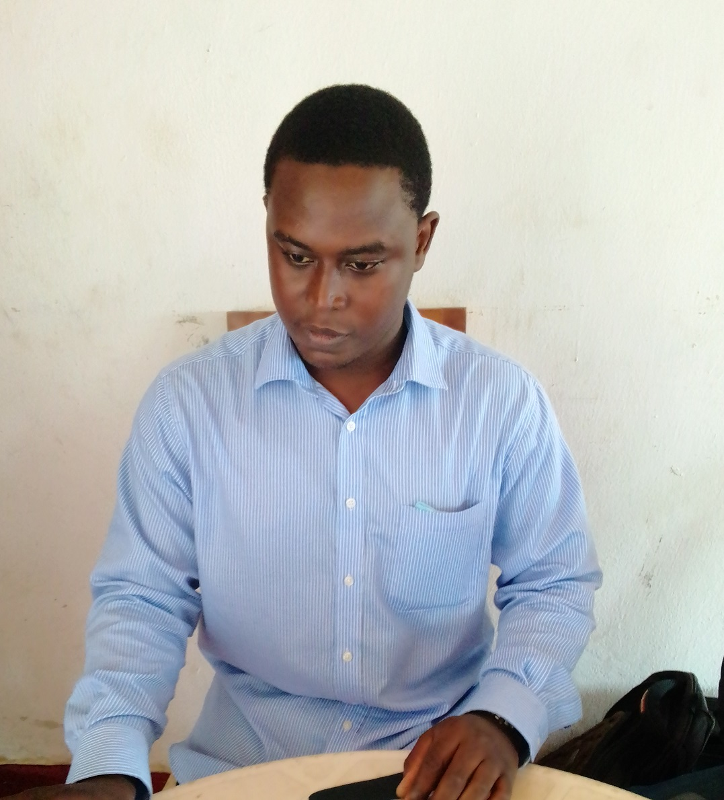

Volunteer Experience
LEAP Africa (Youth Day of Service 2021)Ibadan,
Nigeria
Technical Support TrainerAug 2021
- Supported Trainers in overseeing subject areas such as Climate Change Awareness | Introduction to
Renewable Energy |
Building and Installation of Solar Panels and Solar Oven | Sustainable Agriculture | Waste to Wealth –
Plastic Upcycling
Training | Critical Thinking and Leadership | Entrepreneurship and Financial Literacy | Self Defense and
Taekwondo
Training.
LEAP Africa (Youth Day of Service 2021)Ibadan,
Nigeria
Freelance TrainerAug 2021
- Trained a group of over 63 registrants on how to freelance with coding/programming skills.
Education Support NetworkIbadan,
Nigeria
MentorFeb 2020
- Mentored Students of International School Ibadan (ISI) on the pathway to becoming a computer programmer
and career path
in Robotics and Nanotechnology.